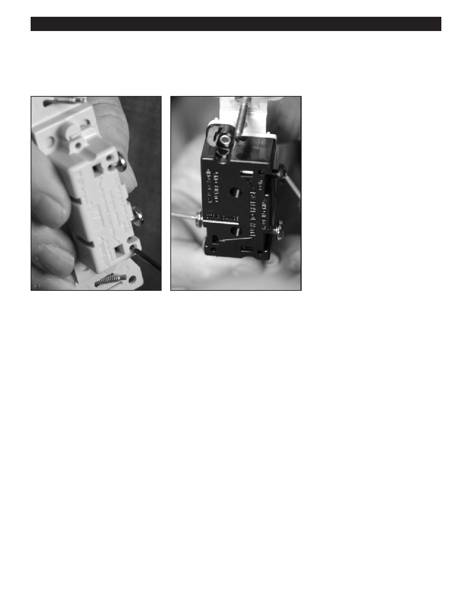

PA RT I C I PA N T R E S O U R C E G U I D E
Wall Switches (continued)
Single-pole and Three-way Wall Switches
Single-pole switches have two screw Three-way switches have three screw
terminals. These operate lights from
terminals. These operate lights from
one location.
two locations and are used in pairs.
Installation Guidelines
For standard installations, choose a switch that has a wire gauge rating of #12 or #14.
For wire systems with solid copper wiring, use only switches marked COPPER or CU.
For aluminum wiring systems, use only switches marked CO/ALR.
For copper coated-aluminum wire, use only switches marked CO/ALR.
Replacement Guidelines
When replacing a switch, get a new one with the same specifications (i.e., amperage rating, voltage rating, wire gauge rating
and wire compatibility rating) and the same number of screws as the old one.
Connect the wires to the screw terminals even if the switch has push-in terminals. The connection is more reliable.
34